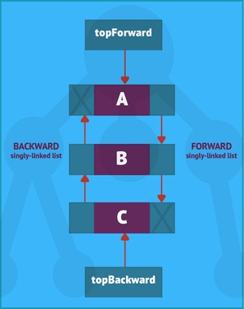

Doubly-linked lists and circular-linked lists, and their algorithms
While singly-linked lists have many uses, they also present some restrictions (限制). For one thing, singly-linked lists restrict node traversal (遍历) to a single direction: you can’t traverse a singly-linked list backward unless you first reverse its node links, which takes time. If you do a reverse traversal and need to restore node-traversal to the original direction, you will have to repeat the inversion, which takes more time. Singly-linked lists also restrict node deletion. In this type of list, you cannot delete an arbitary node without access to the node’s predecessor (前任).
Fortunately, Java offers serveral types of list that you can use to search and sort sorted data in your Java programs. This final tutorial in the Data structures and algorithms series introduces searching and sorting with double-linked lists and circular-linked lists. As you’ll see, these two data structure categories build on single-linked lists to offer a wider range of searching and sorting behavior in your Java programs.
Doubly-linked lists
A doubly-linked list is a linked list of nodes where each node has a pair of link fields. One link field lets you traverse the list in a forward direction, whereas the other node lets you traverse the list in a backward direction. For the forward direction, a reference variable holds a reference to the first node. Each ndoe links to the next node via the “next” link field, except for the last node, whose “next” link field contains the null reference to signify the list’s end (in the forward direction). The backward direction works similalry. A reference variable holds a reference to the forward direction’s last node, which you interpret as the first node. Each node links to the previous node via the “previous” link field. The first node’s “previous” link field contains null to signify the list’s end.
Try to think of a doubly-linked list as a pair of singly-linked lists, each interconnecting the same nodes. The diagram in Figure1 shows topForward-referenced and topBackward-referenced singly-linked lists.

CRUD operations in double-linked lists
Creating, inserting, and deleting nodes are all common operations in a doubly-linked list. They’re similar to the operations you learned for singly-linked lists. (Remember that a doubly-linked list is just a pair of singly-linked lists that interconnect the same nodes.) The following pseudocode demonstrates the creation and insertion of nodes into the doubly-linked list shown in Figure 1. The pseudocode also demonstrates node deletion:1
2
3
4
5
6
7
8
9
10
11
12
13
14
15
16
17
18
19
20
21
22
23
24
25
26DECLARE CLASS Node
DECLARE STRING name
DECLARE Node next
DECLARE Node prev
END DECLARE
DECLARE Node topForward
DECLARE Node temp
DECLARE Node topBackward
topForward = NEW Node
topForward.name = "A"
temp = NEW Node
temp.name = "B"
topBackward = NEW Node
topBackward.name = "C"
// Create forward singly-linked list
topForward.next = temp
temp.next = topBackward
topBackward.next = NULL
// Create backward singly-linked list
topBackward.prev = temp
temp.prev = topForward
topForward.prev = NULL
// Delete Node B.
temp.prev.next = temp.next; // Bypass Node B in the forward singly-linked list.
temp.next.prev = temp.prev; // Bypass Node B in the backward singly-linked list.
END
Example application: CRUD in a doubly-linked list
The example Java application DLLDemo demonstrates how to create, insert, and delete nodes in a doubly-linked list. THe application’s source code is show in Listing 1.
Listing 1. A Java application demonstracting CRUD in a doubly-linked list
1 | public final class DLLDemo |
Compile Listing 4 as follows:1
javac DLLDemo.java
Run the resulting application as follows:1
java DLLDemo
You should observe the following output:1
2
3
4Forward singly-linked list: ABC
Backward singly-linked list: CBA
Forward singly-linked list (after deletion): AC
Backward singly-linked list (after deletion): CA
Shuffling in double-linked lists
The Java Collections Framework includes a Collections class of utility methods, which is part of the java.util package. This class includes a void shuffle(List<?> list) method that “randomly permutes the specified list using a default source of randomness”. For example, you might use this method to shuffle (搅乱) a deck of cards expressed as a double-linked list (the java.util.LinkedList class is an example). In the pseudocode below, you can see how the Shuffle algorithm migth shuffle a doubly-linked list:1
2
3
4
5
6
7
8
9
10
11
12
13
14
15
16
17
18
19
20
21
22
23
24
25DECLARE RANDOM rnd = new RANDOM
DECLARE INTEGER i
FOR i = 3 DOWNTO 2
swap(topForward, i - 1, rnd.nextInt(i))
END FOR
FUNCTION swap(Node top, int i, int j)
DECLARE Node nodei, nodej
DECLARE INTEGER k
// Locate ith node.
Node nodei = top
FOR k = 0 TO i - 1
nodei = nodei.next
END FOR
// Locate jth node.
Node nodej = top
FOR k = 0 TO i - 1
nodej = nodej.next
END FOR
// Perform the swap.
DECLARE STRING namei = nodei.name
DECLARE STRING namej = nodej.name
nodej.name = namei
nodei.name = namej
END FUNCTION
END
The Shuffle algorithm obtains a source of randomness and then traverse the list backward, from the last node up to the second. It repeatedly swaps a randomly selected node (which is actually just the name field) into the “current position”. Nodes are randomly selected from the portion of the list that runs from the first ndoe to the current position, inclusive. Note that this algorithm is roughly excerpted from void shuffle(List<?> list)‘s source code.
The shuffle algorithm pseudocode is lazy because it focuses only on the forward-traversing singly-linked list. It’s reasonable design decision, but we pay a price for it in time complexity. The time complexity is $O(n^2)$. First, we have the $O(n)$ loop that calls swap(). Second, within swap(), we have the two sequential $O(n)$ loops. Recall the following rule from Part 1:1
2
3
4If f1(n) = O(g(n)) and f2(n) = O(h(n)) then
(a) f1(n)+f2(n) = max(O(g(n)), O(h(n)))
(b) f1(n)*f2(n) = O(g(n)*h(n)).
Part (a) deals with sequential algorithms. Here, we have two $O(n)$ loops. According to the rule, the resulting time complexity would be $O(n)$. Part (b) deals with nested algorithms. In this case, we have $O(n)$ multiplied by $O(n)$, resulting in $O(n^2)$.
Note that Shuffle’s space complexity is $O(1), resulting from the helper variables that are declared.
The Shuffle application in Listing 2 is a demonstration of the Shuffle algorithm.
Listing 2. The Shuffle algorithm in Java
1 | import java.util.Random; |
Compile Listing 5 as follows:1
javac Shuffle.java
Run the resulting application as follows:1
java Shuffle
You should observe the following output from on run:1
2
3
4Forward singly-linked list: ABC
Backward singly-linked list: CBA
Forward singly-linked list: BAC
Backward singly-linked list: CAB
Circular linked lists
The link field in the last node of a singly-linked list contains a null link. This is also true in a doubly-linked list, which contains the link fields in the last nodes of the forward and backward singly-linked list. Suppose, instead, that the last nodes contained links to the first nodes. In this situation, you would end up with a circular-linked list, which is shown in Figure 2.
Circular-linked lists, also known as circular buffers or circular queues, have many uses. For example, they’re used by operating system interrupt handlers to buffer keystrokes. Multimedia applications use circular-linked lists to buffer data (for example, buffering data being written to a sound card). This technique is also used by the LZ77 family of lossless data comperssion algorithms.
Linked lists versus array
Throughout this series on data structures and algorithms, we’ve considered the strengths and weaknesses of different data structures. Since we’ve focused on arrays and linked lists, you might have questions about these types specifically. What advantages adn disadvantages do linked lists and array offer? When do you use a linked list and when do you use an array? Can data structures from both categories be integrated into a useful hybird data structure? I’ll try to answer these questions below.
Linked lists offer the following advantages over arrays:
- They don’t require extra memory to support expansion. In contrast, arrays require extra memory when expansion is necessary. (One all elements contain data items, no new data items can be appended to an array.)
- They offer faster node insertion/deletion than equivalent array-based operations. Only links need to be updated after identifying the insert/delete position. From an array perspective, data item insertion requires the movement of all other data items to create an emptry element. Similarly, deletion of an existing data item requires the movement of all other data items to remove an emptry element. All data item movement takes time
In contrast, arrays offer the following advantages over linked lists:
- Array elements occupy less memory than nodes because elements don’t require link fields
- Arrays offer faster access to data items, via integer-based indexes
Im summary, linked lists are most appropriate when dealing with dynamic data, meaning programs where insertions and deletions are frequent. In contrast, arrays are most appropriate fro programs where data is static, meaning it’s rare to insert or delete new data items. (Recall that if you run out of room when adding data items to an array, you must create a larger array, copy the original array’s data items to the larger array, and dipose of the original. This take time, which affects performance-especially when done repeatedly.)
You might think that merging a singly-linked list with a one-dimensional array to access nodes via array indexes would accomplish nothing. You would waste memory because you need array elements plus nodes, and you would waste time because you need to move the array’s data items whenever you insert or delete a node. In fact, it can be beneficial to integrate an array with a linked list to create a hybrid! While it’s out of the scope of this series, the hash table is a great example of array/linked list cooperation.
Tutorial series conclusion
This tutorial series has introduced the fundamentals of data structures and algorithms. I’ve focused on two data structure categories, Java array and linked lists, which are the basis of more complex data structures such as stacks, queues, trees, graphs, dictionaries/maps, and sets. I encourage you to keep exploring and learning about data structures, and algorithms. As a starting point, Java Collections Framework includes many useful data structures and algorithms you could explore.